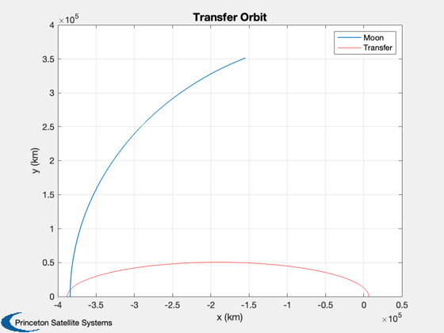
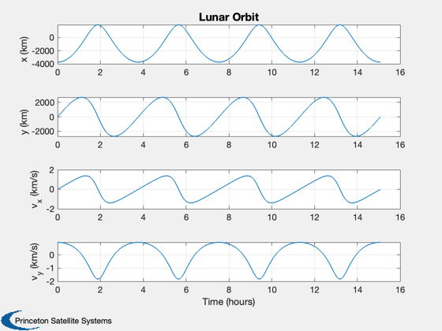
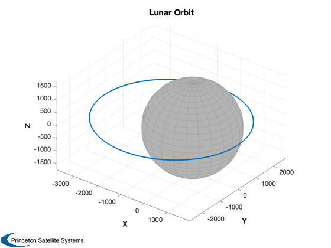

Lunar transfer simulation
Demonstrates an elliptical transfer orbit to the moon and orbit insertion. The moon's orbit is approximated as circular and the transfer orbit is in the plane of the moon's orbit. The insertion is computed and the orbit around the moon simulated.
See also RPRA2AE, OrbMnvrInsertion, RVOrbGen, Constant, Plot2D, TimeLabl, Period, RV2El, RK4 ------------------------------------------------------------------------
Contents
%-------------------------------------------------------------------------- % Copyright (c) 2014 Princeton Satellite Systems % All Rights Reserved. %--------------------------------------------------------------------------
Constants
rMoon = Constant('equatorial radius moon'); mu = Constant('mu moon'); aM = 384000; % moon semi-major axis, km
Parameters
% Desired perilune and apolune altitudes %--------------------------------------- hMP = 200; hMA = 2000; % Earth perigee %-------------- rPE = 6578; % Number of simulation steps %--------------------------- n = 8000; % Compute the transfer orbit %--------------------------- pM = Period(aM); omegaM = 2*pi/pM; rA = aM + hMA + rMoon; [a, e] = RPRA2AE( rPE, rA ); p = Period(a); t = linspace(0,p/2,10000); mM = pi - omegaM*p/2;
Plot transfer
[rM,vM] = RVOrbGen([aM 0 0 0 0 mM],t); s = sprintf('Orbit insertion simulation'); [r, v] = RVOrbGen([a 0 0 0 e 0], t ); Plot2D(rM(1,:),rM(2,:),'x (km)', 'y (km)','Transfer Orbit') hold on plot(r(1,:),r(2,:),'r') legend('Moon','Transfer')
Simulation
Apply the delta-V, recalculate the orbital elements, and simulate the resulting trajectory around the moon.
% Compute the orbit maneuver %--------------------------- deltaV = OrbMnvrInsertion( r(:,end), v(:,end), rM(:,end), vM(:,end), rMoon+hMP, 0, mu ); fprintf(1,'Delta V for Orbit Insertion: %.2f m/s\n', Mag(deltaV)*1e3 ); % Simulate the resulting lunar orbit %----------------------------------- r0 = r(:,end) - rM(:,end); dV = v(:,end) - vM(:,end); v0 = v(:,end) - vM(:,end) + deltaV; x = [r0;v0]; el = RV2El(r0,v0,mu); fprintf(1,'Lunar orbital elements:\n SMA: %g km\n Inc: %g deg\n RAAN: %g deg\n w: %g deg\n e: %g\n M: %g deg\n', [el(1) el(2:4)*180/pi el(5) el(6)*180/pi] ); p = Period(el(1),mu); dT = 4*p/n; xP = zeros(6,n); d.mu = mu; d.a = [0;0;0]; for k = 1:n xP(:,k) = x; x = RK4('RHSOrbit',x,dT,0,d); end % Plot the results %----------------- [t, tL] = TimeLabl((0:(n-1))*dT); yL = {'x (km)' 'y (km)' 'v_x (km/s)' 'v_y (km/s)' }; Plot2D(t,xP([1 2 4 5],:),tL,yL,'Lunar Orbit'); Plot3D(xP(1:3,:),'X','Y','Z','Lunar Orbit',rMoon) %--------------------------------------- % $Id: 0db05e5c55ff1f31dc2ebf2359fc6ff8555315cd $
Delta V for Orbit Insertion: 112.76 m/s Lunar orbital elements: SMA: 2838 km Inc: 180 deg RAAN: 0 deg w: 0 deg e: 0.317125 M: 180 deg 